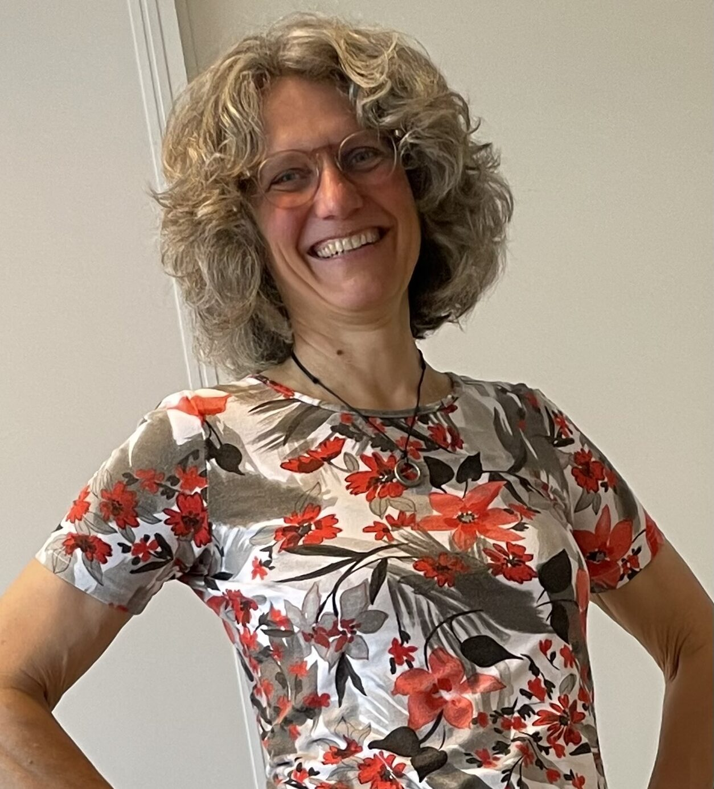

portrait — AstridNa mijn artsexamen in 1995 aan de Universiteit Utrecht heb ik gewerkt als bedrijfsarts, GGD-arts en als consultatiebureau-arts. Toen ik in 2015 in aanraking kwam met de Musculoskeletale geneeskunde wist ik het direct: dít wil ik. Hier komen mijn kennis van en interesse in het bewegingsapparaat samen.
In 2016 ben ik gestart met de opleiding tot MSK-arts bij Leonie Seebregts. Eind 2017 heb ik de opleiding succesvol afgerond en ben ik geregistreerd als MSK-arts. Sindsdien ben ik met veel plezier werkzaam als MSK-arts bij de Beweegartsen in Bilthoven.